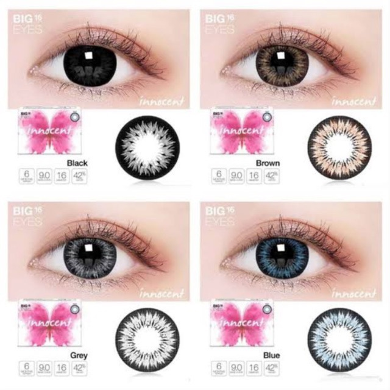
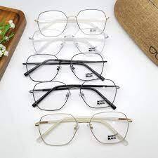
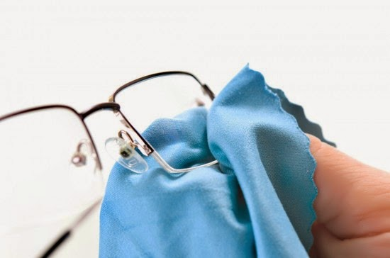

Softlens
Awalnya softlens merupakan alat bantu penglihatan yang dianggap lebih praktis dibanding kacamata, namun saat ini softlens juga digunakan untuk alasan kecantik. Kita tahu bahwa softlens yang bagus dapat memperbaiki fungsi penglihatan. Jika digunakan dan dirawat dengan benar, softlens juga bisa melindungi mata yang berharga dari kerusakan penglihatan jangka panjang. Ini sebabnya memilih softlens yang bagus dengan perawatan yang mudah sangatlah penting Dibanding kacamata, softlens terbukti makin banyak digunakan karena dianggap mampu mengimbangi dan menunjang aktivitas penggunanya. Sebagian besar pengguna softlens berada pada rentang usia 25 hingga 44 tahun, dan mereka merupakan penderita rabun jauh yang menggunakan softlensnya setiap hari. Kebiasaan ini tentunya bisa berujung pada terganggunya kesehatan mata jika Anda tidak memiliki softlens yang bagus dan tidak merawatnya dengan baik.
Frame Kacamata
Salah satu kelebihan kacamata dibandingkan softlens adalah kacamata tidak menyentuh mata secara langsung. Terdapat jarak antara mata dengan lensa kacamata yang kamu gunakan. Hal tersebut lebih mengurangi risiko matamu untuk mengalami iritasi. Berbeda dengan cara pakai softlens yang memang langsung bersentuhan dengan bola matamu. Tentunya dengan bersentuhan secara langsung akan lebih mudah terkena iritasi apalagi jika tanganmu kurang bersih ketika menggunakannya. Kacamata juga memiliki banyak keunggulan seperti dapat melingdungi mata dari debu dan polusi yang dapat menyebabkan mata merah dan iritasi. Selain itu, kacamata dengan lensa anti UV dapat melindungi mata dari sinar UV yang tidak baik bagi mata. Bentuk kacamata yang tersedia dengan berbagai ukuran dapat digunakan sebagai menambah gaya penggunanya. Kacamata tersedia mulai dari bentuk bulat, kotak, cat eye, dan oval. Selain menambah gaya pengguna kacamata akan memiliki wajah yang lebih berkarakter. Tetapi pengguna kacamata harus disesuaikan dengan bentuk muka yang ada.
Lap Kacamata
Kerusakan pada kacamata dapat dipengaruhi oleh banyak faktor. Mulai dari pemakaian yang terlalu sering, hingga kesalahan dalam perawatan. Belum lagi, akumulasi minyak, bekas sidik jari, bahkan debu yang menempel di permukaan lensa. Alih-alih ingin kembali “mengembalikan” fungsi kacamata yang tadinya mengaburkan pandangan, cara membersihkan kacamata yang salah juga dapat merusak lensa itu sendiri. Memang, sih, idealnya, kacamata harus diganti dua tahun sekali. Namun, jika dirawat dengan benar, bukan tidak mungkin “umur” pemakaian kacamata bisa bertambah. Dengan menggunakan lap kacamata kita dapat memperpanjang umur lensa kacamata.